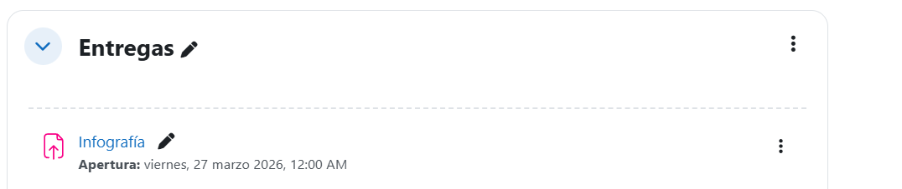

A lo largo de esta Situación de Aprendizaje deberás elaborar los siguientes productos:
1. Infografía interactiva
Deberás crear una infografía en la que expliques de forma visual los conceptos trabajados durante las sesiones (procesos, servicios, permisos, puertos y persistencia).
La infografía deberá incluir elementos interactivos (enlaces, botones o secciones desplegables) y estar diseñada de forma clara y comprensible.
Instrucciones
🎯¿Sobre qué tratará?
La infografía deberá incluir, al menos, los siguientes contenidos:
- Procesos y servicios
- Permisos y SUID
- Puertos y conexiones
- Reconocimiento de sistemas
- Acceso remoto
🧠 Antes de empezar
Antes de crear la infografía, realiza un pequeño esquema o boceto donde organices la información que vas a incluir.
🔎 Búsqueda y uso de información
Puedes utilizar información de clase y recursos de Internet, pero debes asegurarte de:
- Utilizar fuentes fiables
- No copiar directamente contenido
- Respetar los derechos de autor
🛠️ Herramientas
Puedes utilizar herramientas como Canva o Genially para la creación de la infografía.
🎨 Diseño y accesibilidad
Ten en cuenta los siguientes aspectos:
- Utiliza colores que faciliten la lectura
- Emplea tipografías claras
- Organiza bien la información
- Usa elementos visuales (iconos, esquemas, etc.)
🔗 Elementos interactivos
La infografía deberá incluir al menos un elemento interactivo, como:
- Enlaces
- Botones
- Secciones desplegables
👥 Organización del trabajo
La actividad podrá realizarse de forma individual o en pareja.
📌 Datos obligatorios
En la infografía deben aparecer los siguientes datos:
- Nombre del centro educativo
- Curso
- Módulo
- Nombre del profesor o profesora
- Fecha
📤 Entrega
La infografía se entregará a través de la plataforma Aula Virtual en la tarea correspondiente:

2. Vídeo demostrativo
Deberás grabar un vídeo en el que muestres una práctica realizada durante las sesiones (por ejemplo, análisis de procesos, uso de herramientas o detección de configuraciones inseguras).
En el vídeo deberás explicar qué estás haciendo y por qué, utilizando un lenguaje técnico adecuado.
Instrucciones
🎯 ¿Sobre qué tratará?
El vídeo deberá centrarse en uno de los siguientes contenidos:
- Procesos y servicios
- Permisos y SUID
- Puertos y conexiones
- Reconocimiento con nmap
- Acceso remoto con netcat
🧠 Antes de grabar
Antes de comenzar, prepara un pequeño guion donde definas:
- Qué vas a explicar
- Qué comandos vas a utilizar
- En qué orden lo vas a mostrar
🎬 Grabación del vídeo
El vídeo deberá incluir:
- Ejecución de comandos en el sistema
- Explicación de lo que estás haciendo
- Justificación de por qué es relevante en ciberseguridad
👥 Organización del trabajo
La actividad se realizará en parejas.
🛠️ Herramientas
Puedes utilizar el móvil o herramientas de grabación de pantalla para realizar el vídeo.
🎨 Calidad y accesibilidad
Ten en cuenta los siguientes aspectos:
- Explicación clara y comprensible
- Audio entendible
- Estructura ordenada
- Duración aproximada de 1 a 3 minutos
📌 Datos obligatorios
En el vídeo deben aparecer los siguientes datos:
- Nombre del centro educativo
- Curso
- Módulo
- Nombre del profesor o profesora
- Fecha
📤 Entrega
El vídeo se entregará a través de la plataforma Aula Virtual en la tarea correspondiente.
Entrega de los productos
Los productos se entregarán a través de la plataforma indicada por el profesorado (Teams / Aula Virtual), dentro del plazo establecido.